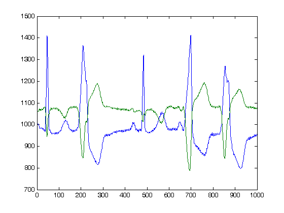

ECGwrapper¶
This class allows the access to ECG recordings of several formats and length.
Syntax¶
You can create an object without arguments, configuring its properties later. Or you can create it via pairs of PropertyName-PropertyValue pairs.
ECGw = ECGwrapper()
ECGw = ECGwrapper( 'PropertyName', PropertyValue )
Description¶
This is the main class of the toolbox since it allows access to cardiovascular signal recordings of several formats (MIT, ISHNE, AHA, HES, MAT) and lengths, from seconds to days. The objective of this class is to provide ECGtask class, a common interface to access data and perform specific tasks. Briefly, this class sequentially reads data and passes to the Process method of the ECGtask plugged in the ECGtaskHandle property. Some common tasks, such as QRS detection and ECG delineation, can be easily invoked. Also other predefined tasks or your own code can be adapted as is shown in the examples.
A more detailed description of this class, together with an explanation of how you can easily hook your algorithms to this class is here.
Finally the results produced by the ECGtask are stored in order to ease reproducibility and backup of your experiments, or to be used of subsequent tasks as shown in the examples.
Input Arguments¶
Specify optional comma-separated pairs of 'Name', Value arguments.
'Name' is the argument/property name and Value is the corresponding value.
'Name' must appear inside single quotes ' '. You can specify
several name and value pair arguments in any order as
Name1,Value1,...,NameN,ValueN.
Example:
% specifies to create an ECGwrapper to detect
% heartbeats in recording '/ecg_recordings/rec1.dat'
ECGwrapper('recording_name','/ecg_recordings/rec1.dat', 'ECGtaskHandle', 'QRS_detection')
The available arguments for the class constructor are listed below:
'recording_name' — The ECG recording full name. '' (default)
The full path filename of the ECG recording.
'recording_format' — ECG recording format. auto-detect format (default)
The format of the ECG recording. By default or if not specified, the wrapper will attempt to auto-detect the format among the following table:
String Description MIT MIT format ISHNE ISHNE format AHA American Heart Association ECG Database or AHA in Physionet HES Biosigna format MAT Matlab file format Mortara Mortara SuperECG format
'this_pid' — Process identification for multiprocess batch jobs. '1/1' (default)
In case working in a multiprocess environment, this value will identify the current process. Can be a numeric value, or a string of the form ‘N/M’. This pid is N and the total amount of pid’s to divide the whole work is M.
'tmp_path' — The path to store temporary data. tempdir() (default)
Full path to a directory with write privileges.
'output_path' — The output path to store results. fileparts(recording_name) (default)
Full path to a directory with write privileges. By default will be the same path of the recordings.
'ECGtaskHandle' — The task to perform. '' (default)
The task to perform, can be the name of the task, or an ECGtask object. Available ECGtasks can be listed with`list_all_ECGtask()command.
'partition_mode' — The way that this object will partition lengthy signals. 'ECG_overlapped' (default)
The way to do batch partition in lengthy signals:
- ‘ECG_contiguous’ no overlapp between segments.
- ‘ECG_overlapped’ overlapp of ‘overlapping_time’ among segments. This can be useful if your task have a transient period to avoid.
- ‘QRS’ do the partition based on the annotations provided in ECG_annotations.time property. This option is useful if your task works in the boundaries of a fiducial point (commonly a heartbeat), and not in the whole signal. This partition mode ignores those parts of the recording without annotations.
'overlapping_time' — Time in seconds of overlapp among consequtive segments. 30 (default)
Time in seconds of overlapp among consequtive segments. This segment is useful for ensuring the end of all transients within a task.
'cacheResults' — Save intermediate results to recover in case of failure. true (default)
Save intermediate results to recover in case of errors. Useful for long jobs or recordings.
`'syncSlavesWithMaster' — Time in seconds of overlapp among consequtive segments. false (default)
In multiprocess environments sometimes it is useful to terminate all pid’s together in order to start subsequent tasks synchronously. This value forces all parts of a multipart process to wait until all other parts finish.
'repetitions' — Times to repeat the ECGtask. 1 (default)
In case the ECGtask is not deterministic, the repetition property allows to repeat the task several times.
Other public properties to configure the object, or to access recording’s data are:
Error — Did the ECGtask produce any Error ? false (default)
You can check this value after executing a task.
Processed — Was the task already processed ? false (default)
You can check if you have already issued a Run method for the current configuration.
NoWork2Do — Has this PID work to do ?
In a multi-PID environment, certain tasks are too short to provide work to all configured PIDs. You can check to this flag to deal with it in your code.
ECG_header — The gathered information about the ECG recording.
ECG_header, is a struct with the following information:
- freq, is the sampling frequency of ECG_matrix signal.
- desc, description strings about each of the leads/signals.
- nsamp is the number of samples of ECG_matrix.
- nsig is the amount of leads or signals of ECG_matrix.
- gain is a vector of [nsig × 1] with the gain of each lead ( ADCsamples / μV ).
- adczero is a vector of [nsig × 1] with the offset of each lead in ADC samples.
and others described in the Physionet header.
ECG_annotations — Annotations provided with the recording.
Commonly QRS detections, signal quality annotations or other type of measurements included with the recordings. Some documentation about annotations in Physionet.
class_labeling — Class conversion for heartbeat annotations.
In case the annotations includes heartbeat types, this property indicates the class-labeling convention used. The EC-57 AAMI recommendation is de default value. The possible values are'AAMI'orAAMI2. TheAAMI2is equal toAAMIexcept that only consider three heartbeat classes, normal (N), ventricular (V) and supraventricular (S).
user_string — A string to individualize each experiment. '' (default)
Result_files — The result filenames produced by an ECGtask.
Once the task is completed, this property records the filenames of the results.
Methods¶
Some useful methods are described below.
Run — Execute the ECG task
This method executes the configured ECG task.
read_signal — Read signal samples
This method allows to easily reads samples from a recording
% function prototype function ECG = read_signal(ECG_start_idx, ECG_end_idx)where the arguments are:
ECG_start_idx, is the first sample to read.
1 (default).ECG_end_idx, is the last sample to read.
ECG\_header.nsamp (default)and as a result, it returns:
ECG, which is a matrix of size[(ECG\_end\_idx - ECG\_start\_idx + 1) ECG\_header.nsig] (default)as it is exemplified below
% reads ECG 100 samples ECG = ECG_w.read_signal(1, 99);
ReportErrors — Display the error report generated during the task execution
This method reports error generated during task execution.
GetCahchedFileName — Find the result files of an specific recording/task
This method returns the cached filename for an specific recording, and task, if available.
% Get result filename of previous QRS detection. % The corrected/audited version has precedence if available. cached_filenames = ECGw.GetCahchedFileName({'QRS_corrector' 'QRS_detection'});
Examples¶
Create the simplest ECG wrapper object¶
Create the ECGwrapper object.
>> ECG_w = ECGwrapper()
ECG_w =
############################
# ECGwrapper object config #
############################
+ECG recording: None selected
+PID: 1/1
+Repetitions: 1
+Partition mode: ECG_overlapped
+Function name: Null task
+Processed: false
Then, in your script or in the command window you can type:
>> ECG_w.recording_name = 'some_path\100';
>> ECG_w.ECGtaskHandle = 'QRS_detection'
ECG_w =
############################
# ECGwrapper object config #
############################
+ECG recording: some_path\100 (auto)
+PID: 1/1
+Repetitions: 1
+Partition mode: ECG_overlapped
+Function name: QRS_detection
+Processed: false
Now, you just want to run the task by executing:
>> ECG_w.Run();
Create an ECGwrapper object for an specific recording and task¶
In this case, we create the same object of the previous example but using the name-value .
>> ECG_w = ECGwrapper( ...
'recording_name', 'some_path\100', ...
'recording_format', 'MIT', ...
'ECGtaskHandle', 'QRS_detection', ...
)
ECG_w =
############################
# ECGwrapper object config #
############################
+ECG recording: some_path\100 (auto)
+PID: 1/1
+Repetitions: 1
+Partition mode: ECG_overlapped
+Function name: QRS_detection
+Processed: false
>> ECG_w.Run();
Create an ECGwrapper and access the recording data¶
In this case, we create an object and access to the ECG_header property.
>> ECGw = ECGwrapper( 'recording_name', 'd:\mariano\misc\ecg-kit\recordings\208')
ECGw =
############################
# ECGwrapper object config #
############################
+ECG recording: d:\mariano\misc\ecg-kit\recordings\208 (auto)
+PID: 1/1
+Repetitions: 1
+Partition mode: ECG_overlapped
+Function name: Null task
+Processed: false
>> ECGw.ECG_header
ans =
recname: '208'
nsig: 2
freq: 360
nsamp: 650000
btime: '00:00:00'
bdate: '01/01/2000'
spf: [2x1 double]
baseline: [2x1 double]
units: [2x2 char]
fname: [2x7 char]
group: [2x1 double]
fmt: [2x1 double]
gain: [2x1 double]
adcres: [2x1 double]
adczero: [2x1 double]
initval: [2x1 double]
cksum: [2x1 double]
bsize: [2x1 double]
desc: [2x5 char]
Then we get the first 1000 signal samples using the read_signal method.
>> plot(ECGw.read_signal(1,1000))
as result we obtain the following plot
